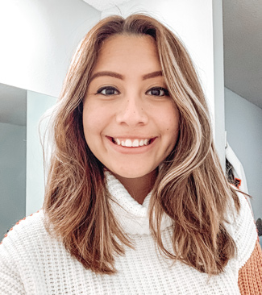

Hello! Hola! Bonjour!
My Story
In January of 2017, I took a trip to Puerto Rico and fell in love with telling stories. I had been facinated with fine arts from the moment I picked up a pencil, yet I always felt that there was something missing. I always felt like my artistic interests could be used for a higher purpose, and it was during this trip that I discovered that higher purpose. Art, specifically photography, can be so powerful. It can share the stories of the voiceless, build a company up from the ground, and start movements that change society among so many other things.
Growing up as a first generation Mexican American female, I quickly picked up on the differences between the two cultures I was constantly caught between. While I was intruiged by the stories my mother would tell me about her childhood, the unfairness of her life also broke my heart. The emotions I felt inspired me to try to find ways to use my creative talents to make the world a better place in some way. I am still searching for what exactly that looks like, but it for sure is the underlying principle that motivates all of my actions in life
I am a dedicated and focused creative student with a unique eye for detail and the ability to complete tasks quickly and efficiently. I absolutely love meeting new people and learning their stories, working with children, and exploring the similarities and differences between cultures. If you run into me on the street, I will not hesitate to greet you with the largest smile possible.
Skills
- Microsoft Office proficiency
- Advanced Photoshop, Illustrator, and InDesign skills
- Strong photography and design skills
- Fluent in Spanish, intermediate French
- Social media proficiency
- Strong communication skills
- Excellent time management and organization
- Professional and mature
Contact Me
damariszamudio@gmail.com
Instagram @damaris.zamudio (brand partnerships only)